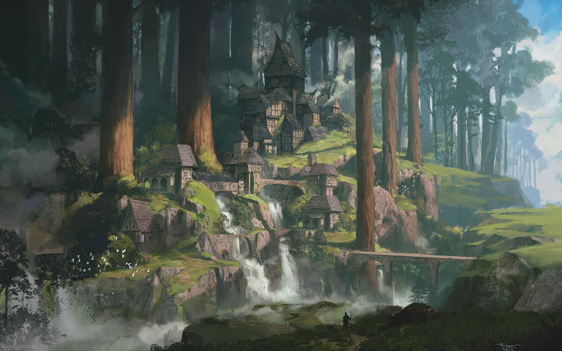
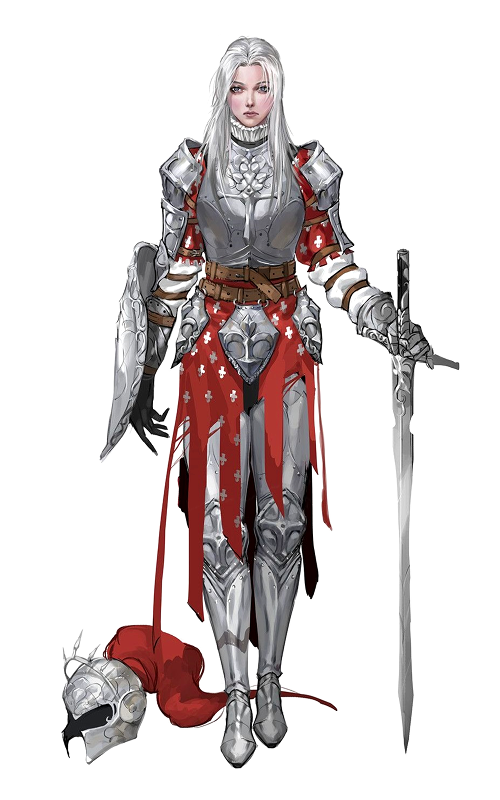
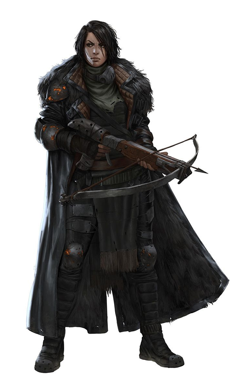

Negative Selection
This is a game setting that I am making.
The Empire
About one third of the continent is under the control of the ???? Empire. Although the imperial government claims full control over its vassal states, its main concern is the enforcement of religious doctrine.
Population Limits
The gods do not approve of large settlements and do not hesitate to demonstrate their displeasure. They seem to take no notice of villages with fewer than fifty residents. Above fifty, there is a noticeable increase in the number of Observers visiting the area. Beyond five hundred residents there is a constant Observer presence with three or more units present at all times. If a settlement's population grows to more than one thousand people it will eventually be raided by dangerous robots. These raids continue every few days until the population is reduced to safe levels.
There are some large cities in the world which are home to tens of thousands of people; these cities are effectively at war with the gods and must fight constantly for survival.
Sedlan Falls
A small town of just over sixty residents, Sedlan Falls is located on the ???? River at the edge of the ???? Forest. Lumber is the main export, and most of the town's citizens work on some aspect of that industry. The town trades most of its lumber for grains, textiles, and metal. They also produce meat, furs, and leather by hunting as well as mushrooms, berries, and herbs collected in the forest.
...
...
...
The Crusade
The Crusade's duty is the enforce imperial doctrine. This doctrine is designed to keep the empire safe from the anger of gods and machines. They enforce population limits, confiscate and destroy contraband, and punish or kill individuals who place the Empire at risk.
The Crusade is not a monolithic organization. It is composed of many different chapters, each of which is assigned a specific region of operation. Each chapter manages its own membership, training, and activities as necessary to carry out their duties. Crusaders are not immune to local law, but are granted permission to take all necessary steps in eliminating heresy when it is discovered. Some crusaders or entire chapters abuse this authority, but such actions will draw punishment from other chapters or the Imperial Inquisition if it is discovered.
...
...
...
...
...
The Inquisition
The Imperial Inquisition is like the Imperial Crusade in that it enforces imperial doctrine. It differs, however, in that it's main target of enforcement is the Imperial government itself. This includes the entire imperial capital, all outposts and embassies, and all branches of the Imperial Legions, including the Crusade.
Because of the nature of their work, members of the Inquisition often operate in secret. Their agents often pose as travellers or adventurers while investigating an area. When heresy is found, they call for support and the full power of the Inquisition arrives suddenly and without warning.
The Inquisition is also tasked with handling external matters when the Crusade's tactics are ineffective. For example, if a particularly powerful or wealthy individual is charged with heresy, the Inquisition will quietly remove that individual to avoid causing unrest or panic.
...
...
...
...
The Observers

Observers are ever-present in most regions. Some view them with suspicion while others revere them. They rove silently across the landscape, taking in every detail with their sensors. Nobody has been able to establish a clear pattern to their movements, but there are few places that don't see an observer at least once per month, and they are daily visitors in most settlements.
Imperial doctrine holds that observers are the eyes and ears of the gods. They watch over humanity for signs of sin or corruption, and the wrath of the gods will follow when they find it. All citizens of the Empire are forbidden from interfering with observers in any way; simply touching or tripping over an observer is punishable with beatings. Deliberately assaulting an observer, whether it is damaged or not, is punishable by death.
Observers rarely interfere with human activity. They often seem to avoid humans, and when one enters a settlement it simply wanders along paths and roadways throughout the area before eventually leaving. Occasionally, however, the observers will take particular interest with a location and begin handling objects, entering buildings, and even physically detaining people for examination. Many people will evacuate an area when this happens, assuming that more dangerous robots will attack soon. They are usually correct.